Revisión completa · 27 nov 2026 · Tarea 1 · Sistema de diseño agéntico
El sistema, revisado
Ámbar: nada roto, pero hay cosas que se notan.
La pieza cumple lo que prometía: los tokens salen de estilos/ en los dos formatos, las reglas están escritas en palabras llanas, cada componente tiene su ficha, la guía de estilo se genera sola y la comprobación automática pasa. Los 14 componentes de /styleguide se ven bien a 390, 768 y 1440 px, con tres familias, cinco tamaños y una sola sombra (la de la ficha del agente). Con «reducir movimiento» se paran los vídeos y las animaciones. Las páginas antiguas siguen funcionando tras quitar DM Sans, DM Mono y Caveat, y no hay errores en la consola.
Lo que más se nota: dos parejas de color de agente (creative y collab) se leen justo por debajo de lo recomendable en letra pequeña, el recuadro de foco del teclado apenas se ve sobre la cabecera negra (y usa un color del sistema viejo), y a la comprobación automática se le escapan algunas cosas (espacios en otras unidades, duraciones, código JavaScript).
Conocido, no cuenta como fallo: el enlace «Play» del menú lleva a una página que aún no existe (es la siguiente tarea).
Los cinco más importantes
Dos colores de agente se leen justos
«Las letras pequeñas de “creative” y “collab” cuestan un poco de leer.»
Texto sobre su fondo: creative 4,3 y collab 4,2 a 1. Para letra pequeña (las etiquetas de 12 px) se recomienda al menos 4,5. Ops queda justo en 4,5; el resto, de sobra. Es una cuestión de gusto (los colores son tuyos y están marcados como provisionales): basta con oscurecer un poco el color del texto de esas dos parejas.
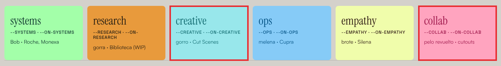
El foco del teclado casi no se ve en la cabecera
«Navego con el tabulador y no sé en qué enlace del menú estoy.»
Las pestañas y la fila desplegable funcionan bien con el teclado (flechas, Enter). Pero el recuadro que marca dónde estás es granate oscuro, un color del sistema viejo que ya no está en los tokens. Sobre papel se ve bien; sobre la cabecera negra se queda en 2,6 a 1 (lo mínimo es 3). Falta un token de «foco» en el sistema.
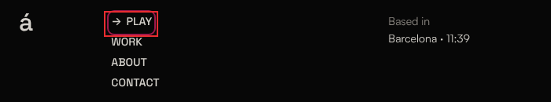
La 404 tiene la cabecera nueva pero el cuerpo viejo
«Esta página parece de otra web: el titular es de palo seco y en negrita.»
El titular va en Space Grotesk negrita, a un tamaño que no está en la escala, y los botones son los antiguos (sin la flecha de color). Según estilos/, los titulares van en Instrument Serif con la parte importante en cursiva. Además la comprobación no lo detecta porque la página usa clases antiguas en vez de escribir los valores.
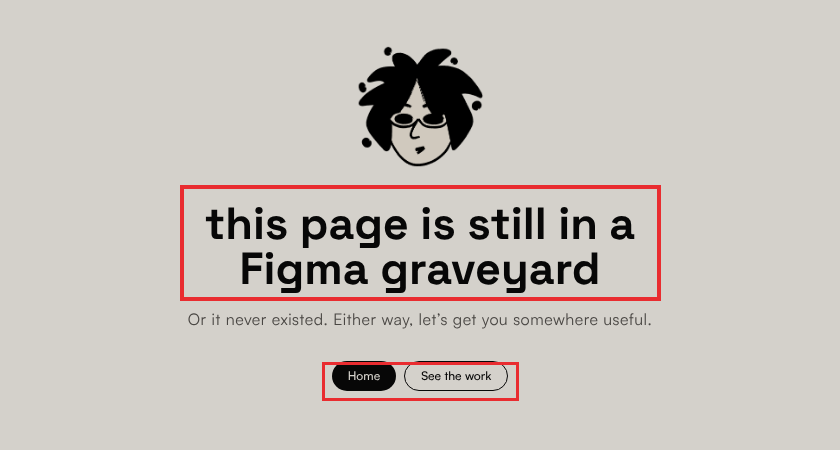
En móvil, la cara de Contact tapa las pistas
«No puedo leer las pistas 02 y 03 del crucigrama: la cabeza del gorro está encima.»
A 390 px la cara flotante y su nota «let’s talk?» quedan encima del texto de las pistas. La nota antes iba en Caveat y ahora sale en Instrument Serif (es lo esperado). Lo de tapar el texto probablemente ya pasaba antes de esta pieza; lo dejo apuntado porque un visitante lo ve.
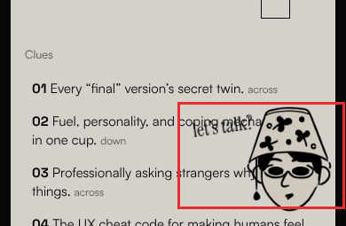
A la comprobación automática se le escapan cosas
(Esto no lo ve un visitante, pero es la promesa de la pieza: que los agentes «no puedan saltarse» el sistema.)
Lo comprobé leyendo el vigilante. No salta si alguien:
- pone un espacio en otra unidad (por ejemplo «2rem» en vez de píxeles), o uno de 1–2 px;
- escribe una duración a mano («400ms») o una altura de línea propia;
- mete estilos desde código JavaScript, que no se lee;
- usa clases antiguas (como en la 404), o escribe una regla correcta que luego no se aplica (como el texto en otra letra de la guía, abajo).
Eso sí: colores, tamaños de letra, familias, radios, sombras, blur y degradados los pilla bien, y la deuda de las páginas viejas solo puede bajar.
Lo que sí cumple (criterios de «hecho»)
- Tokens en CSS y en formato estándar (DTCG), generados desde
estilos/(55 tokens, coinciden) DESIGN.mdcon las reglas en palabras llanas- Ficha de los 14 componentes: para qué, cuándo, cuándo no y un ejemplo
- Skill
portfolio-systemen su sitio npm run checkpasa: «no new breaks · old debt 578»/styleguidegenerada desde tokens y fichas, no escrita a mano- Menú Play · Work · About · Contact en todas las páginas, también en la 404 y la guía
- Movimiento reducido: el vídeo se para y enseña controles; las entradas de la home no se animan
- Sin errores en la consola en ninguna página
El resto
Se nota · La cabecera de ejemplo de la guía corta el email (1440 px)
«En la guía, el email de la cabecera se sale de su caja.»
Solo pasa en el ejemplo de /styleguide, porque ahí la cabecera vive en una caja más estrecha que la pantalla. En las páginas de verdad el email cabe bien a 810, 1024, 1100, 1280 y 1440 px.
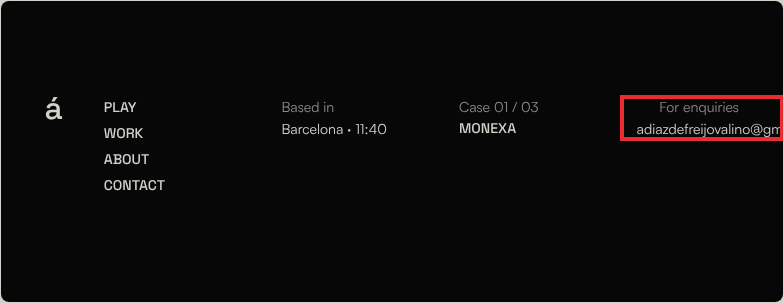
Se nota · La guía mezcla español e inglés
«La página está en inglés, pero las descripciones de los colores salen en español.»
Las notas de los tokens («marco, texto principal», «gorra · Biblioteca (WIP)»…) vienen tal cual de estilos/tokens.css, que está en español. El copy de la web va en inglés.
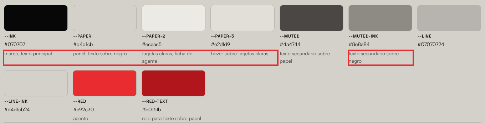
Detalle · Un cuarto tipo de letra en la propia guía
Los nombres de archivo de la entradilla (estilos/tokens.css, DESIGN.md) salen en la letra monoespaciada del navegador, justo en la página que dice «tres familias». La regla para ponerlos en Space Grotesk está escrita, pero no llega a aplicarse.
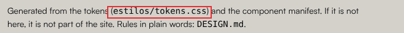
Detalle · Valores a mano dentro de un componente del sistema
La cabecera usa una separación de 2 px entre los enlaces del menú, alturas de línea propias (1,3 y 0,8) y alturas mínimas de 22 y 36 px (también las pestañas). Nada de eso está en los tokens. No se ve raro, pero es justo lo que el sistema dice que no se hace.
Detalle · Las instrucciones para la cursiva no coinciden
La ficha de la tarjeta de título dice «escribe la parte en cursiva entre **…**», pero el ejemplo del encabezado de capítulo usa *…*. Se ve bien en los dos casos, pero un agente puede dudar cuál usar.
Detalle · Pequeñas cosas de la guía
- El radio «pill» enseña «999px ·» con un punto que no lleva nada detrás.
- El color «line» aparece como «#07070724», un código de ocho cifras difícil de leer; en la fuente es negro al 14 %.
- A 390 px, la barra de
--s-8toca su etiqueta. - La demostración de movimiento solo funciona pasando el ratón: en el móvil no se mueve nada.
- La guía descarga un vídeo de 3,7 MB nada más abrirla, también en el móvil.
Detalle · «Up for» desaparece en pantallas medianas
Entre 810 y 1099 px la cabecera esconde «Up for: Meeting people and good collabs»; en móvil también esconde «Based in» y el email. Parece hecho a propósito, pero estilos/ no lo dice.
Detalle · Las páginas viejas aún tienen blur (deuda registrada)
La home y About entran con un desenfoque al cargar; Work tiene una sombra difusa bajo las piezas. Está en la «deuda» que aprobaste y desaparecerá al rehacer esas páginas, pero ahora mismo un visitante lo ve, y va contra «nada de blur». Con movimiento reducido no aparece.
Todas las capturas (7 páginas × 3 anchos)

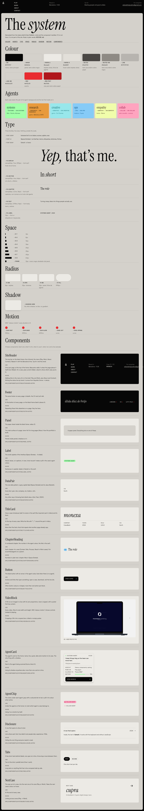
Styleguide 1440 Styleguide 768 Styleguide 390


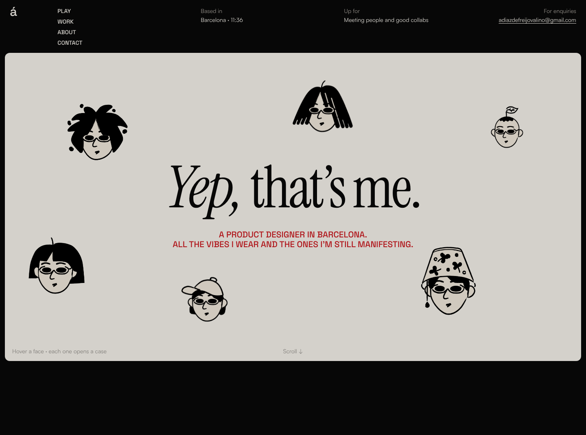
Home 1440
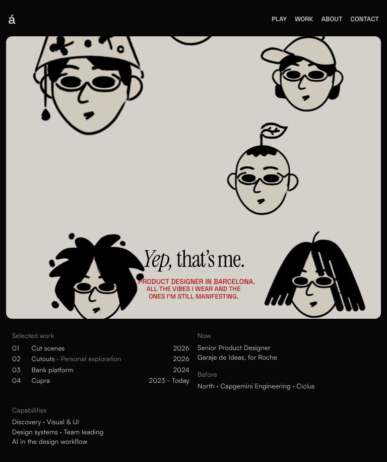
Home 768
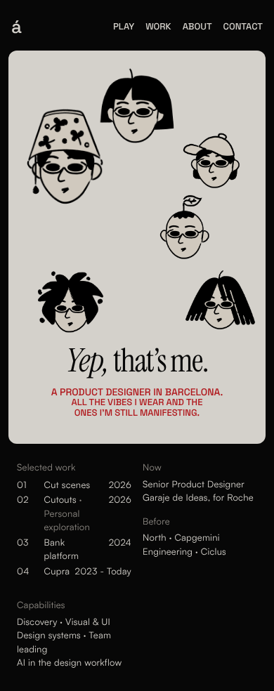
Home 390
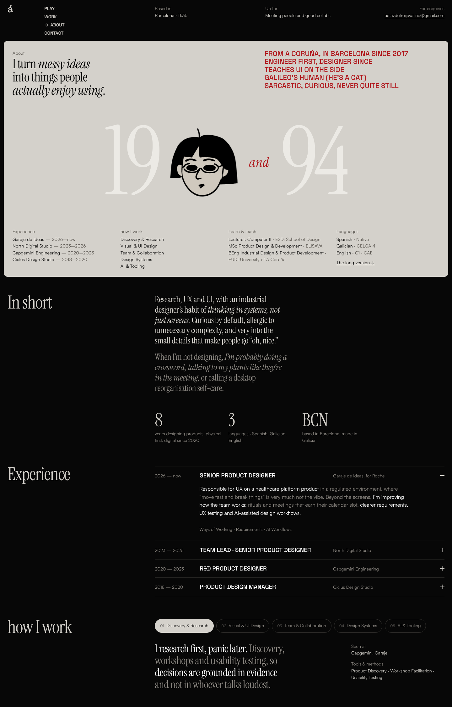
About 1440
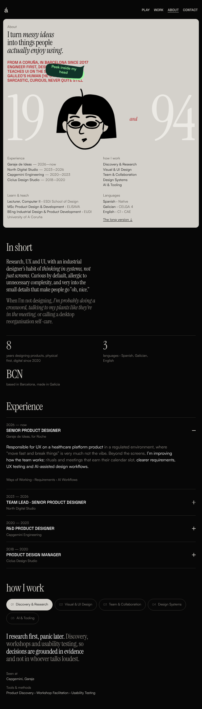
About 768 About 390
About 390

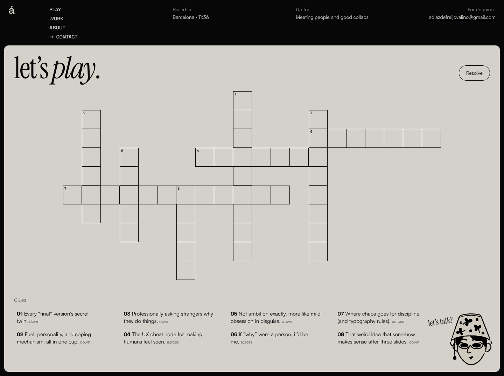
Contact 1440
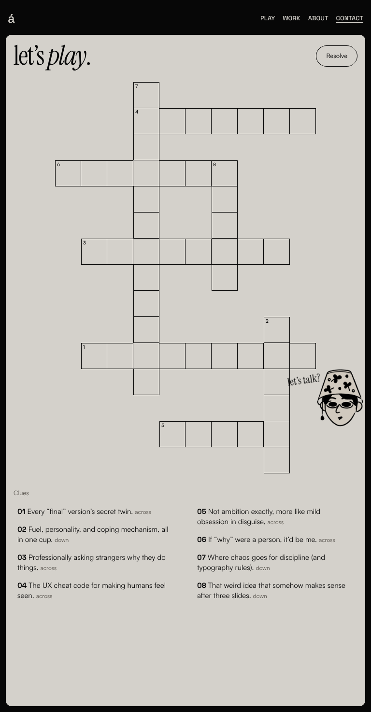
Contact 768
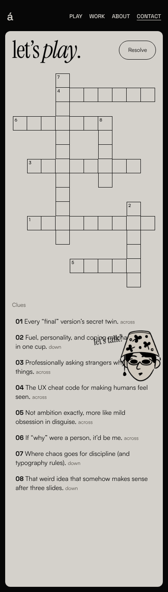
Contact 390
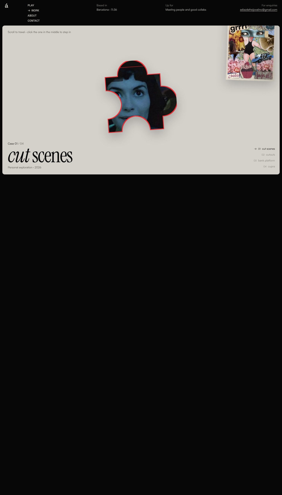
Work 1440
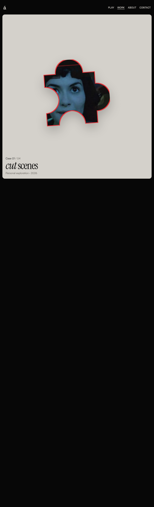
Work 768
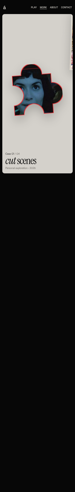
Work 390
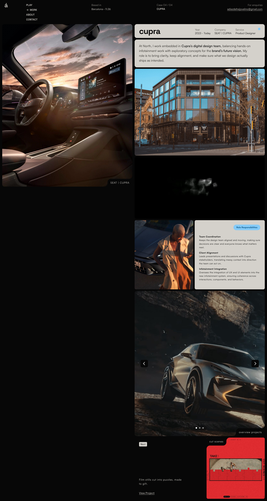
Cupra 1440
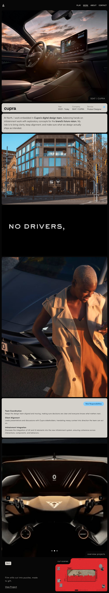
Cupra 768
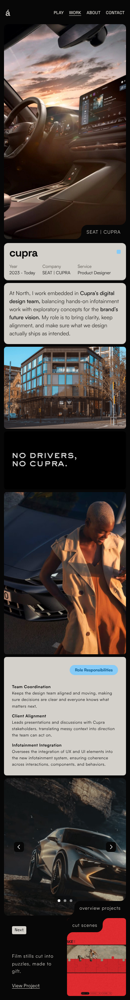
Cupra 390
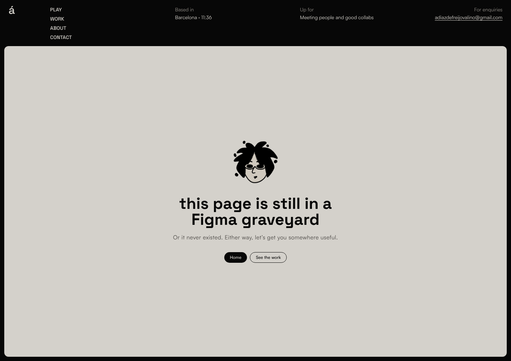
404 1440
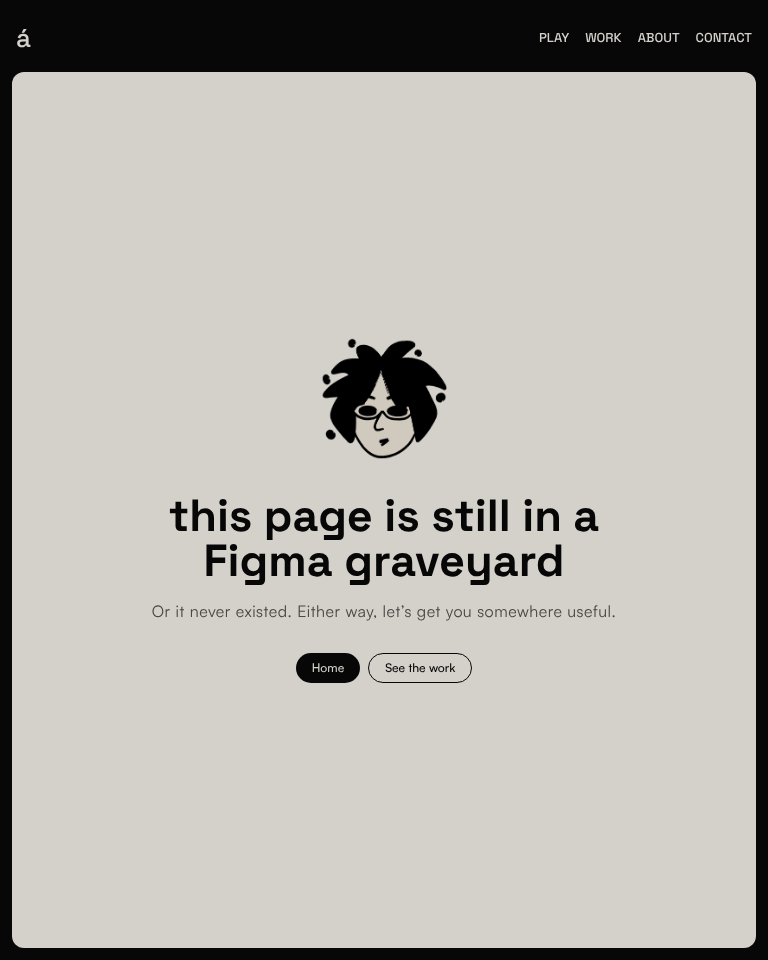
404 768
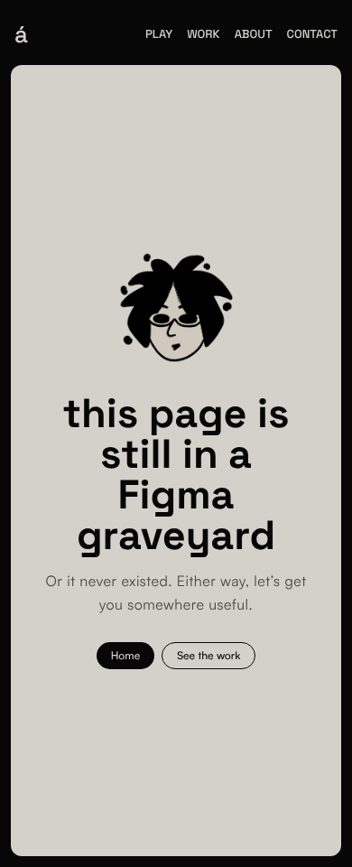
404 390
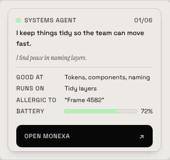
Ficha agente 390
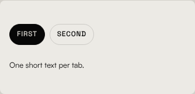
Pestañas 390
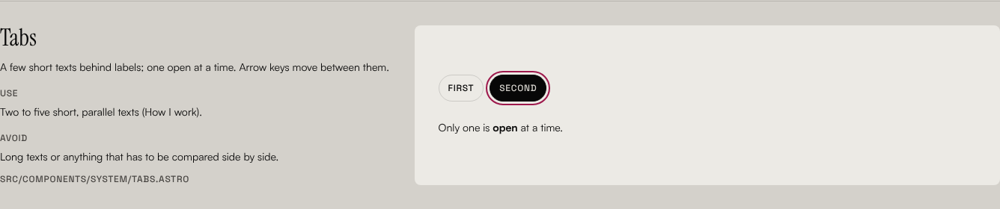
Pestañas con teclado
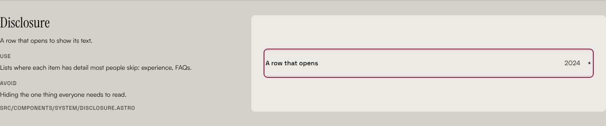
Desplegable con tecladoNo he podido comprobar
- Un móvil de verdad con el dedo: solo he simulado los anchos en un navegador de escritorio.
- Nitidez en pantalla Retina: las capturas son a densidad normal.
- Red lenta y vídeos que fallan: la vista previa es local y carga al instante.
- El texto «NO DRIVERS, NO CUPRA.» del caso Cupra a 768 px sale a medias en la captura; parece una animación pillada a mitad, no lo doy por roto.
- La compilación en Vercel: he revisado una copia estática ya compilada; no he lanzado la compilación.
- Lectores de pantalla: he mirado que pestañas y desplegable estén bien etiquetados, pero no los he probado con uno.
- Revisión anterior: no hay otra de esta pieza, así que no hay «antes y después».